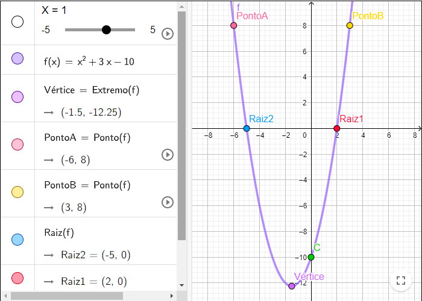

Conceitos básicos de função quadrática
Funções quadráticas (ou funções de segundo grau) tem como definição: f(𝓍) = α𝓍2+ b𝓍 + c
-
Domínio e Imagem
- Domínio: valores possíveis das abcissas (𝓍)
- Imagem: conjunto de valores das ordenandas (y), baseados na resolução de 𝓍.
Exemplo: Vamos atribuir o valor 2 para 𝓍
f(𝓍) = 𝓍2 + 4𝓍 + 6
f(2) = 22 + 4.2 + 6
f(2) = 4 + 8 + 6
f(2) = 18 ou y=18
A imagem de 2 é 18. O domínio é 2 e a imagem é 18. - A função completa é quando b e c são diferentes de zero
Exemplo: f(𝓍) = 5𝓍2 + 2𝓍 + 1 - A função incompleta é quando b ou c são iguais à zero
Exemplo: f(𝓍) = 2𝓍2 - 4 ou f(𝓍) = 2𝓍2 - 10𝓍 - A linha é uma parábola, e a concavidade é definida a partir de:
- As raízes da função (𝓍' e 𝓍'') estão no eixo xscr;
- O vértice é o ponto máximo quando α é < zero, e o ponto mínimo quando α é > zero. Ele pode ser calculado por:
- O c da equação intercepta o eixo y
- Forma geral: α𝓍2 + b𝓍 + c
- Forma canônica: α(𝓍 - 𝓍y)2 + yv = 0, onde 𝓍v e 𝓍y é o vértice
- Forma fatorada: α(𝓍 - 𝓍1) (𝓍 - 𝓍2) = 0, onde 𝓍1 e 𝓍2 são raízes
Função completa e incompleta
Gráficos
- α > 0 : concavidade da parábola voltada para cima
- α < 0 : concavidade da parábola voltada para baixo
- V = (-b/2α , -Δ;/4α)
O gráfico seguinte foi feito por mim em uma atividade no geogebra, no trabalho 1:

Clique aqui para acessar o projeto no geogebra
Lembre-se! Quando a parábola não encosta no eixo x é porque não tem raiz
Diferentes formas de equação
⤷ Para transformar:
- Canônica e fatorada → geral: expandir a expressão, fazer todas as potências e multiplicações necessárias
- Geral → canônica: Encontrar os vértices e posicionar os valores
- Geral → fatorada: Encontrar as raízes e posicionar os valores
Reflexão
Eu achei esse um dos conteúdos mais tranquilos de estudar nesse ciclo de atividades. A parte mais difícil, definitivamente, foi fazer os gráficos a mão. O gráfico no geogebra eu consegui construir tranquilamente, pois já tinha usado o geogebra no 9º ano quando trabalhei com equações de segundo grau. Outro motivo que tornou esse conteúdo "fácil" foi o fato de que quando substituía o 𝓍 era só terminar a conta com as operações, sem precisar resolver de fato a equação. O vértice foi um pouco confuso de entender, mas procurei uma ajuda no site do professor Ferreto e consegui tirar a dúvida que eu tinha.
Resumos
Eu fiz um resumo bem curtinho com os conceitos mais básicos da função, pois o resto do conteúdo eu tinha entendido, e geralmente eu só faço os resumos quando eu não entendo o conteúdo. Seguem as fotos:
.jpg)
.jpg)